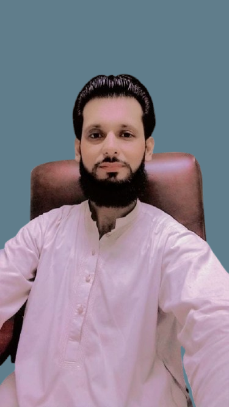

I am Professional Frontend Developer
I design and develop responsive websites and web applications using modern frontend technologies. My focus is on creating clean, user-friendly, and interactive interfaces that deliver seamless digital experiences.
I specialize in building stylish and functional web solutions using HTML, CSS, JavaScript, and modern frameworks. My goal is to transform creative ideas into interactive, high-performance, and visually appealing web experiences.